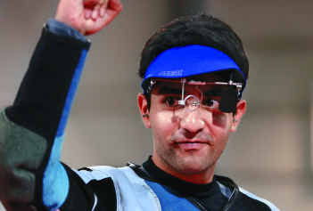

<?xml version="1.0" encoding="UTF-8"?>
<rss version="2.0"
	xmlns:content="http://purl.org/rss/1.0/modules/content/"
	xmlns:wfw="http://wellformedweb.org/CommentAPI/"
	xmlns:dc="http://purl.org/dc/elements/1.1/"
	xmlns:atom="http://www.w3.org/2005/Atom"
	xmlns:sy="http://purl.org/rss/1.0/modules/syndication/"
	xmlns:slash="http://purl.org/rss/1.0/modules/slash/"
	>

<channel>
	<title>Chronosynclastic Infundibulum &#187; PhD</title>
	<atom:link href="http://www.semanticoverload.com/tag/phd/feed/" rel="self" type="application/rss+xml" />
	<link>http://www.semanticoverload.com</link>
	<description>The world through my prisms</description>
	<lastBuildDate>Thu, 07 Apr 2011 17:36:17 +0000</lastBuildDate>
	<language>en-US</language>
	<sy:updatePeriod>hourly</sy:updatePeriod>
	<sy:updateFrequency>1</sy:updateFrequency>
	<generator>http://wordpress.org/?v=3.5</generator>
		<item>
		<title>Applying for a PhD: Looking for the right US school</title>
		<link>http://www.semanticoverload.com/2009/12/09/applying-for-a-phd/</link>
		<comments>http://www.semanticoverload.com/2009/12/09/applying-for-a-phd/#comments</comments>
		<pubDate>Thu, 10 Dec 2009 03:29:05 +0000</pubDate>
		<dc:creator>Semantic Overload</dc:creator>
				<category><![CDATA[education]]></category>
		<category><![CDATA[grad school]]></category>
		<category><![CDATA[guide]]></category>
		<category><![CDATA[PhD]]></category>
		<category><![CDATA[Rivest]]></category>
		<category><![CDATA[tenure]]></category>
		<category><![CDATA[tenure-track]]></category>
		<category><![CDATA[US]]></category>

		<guid isPermaLink="false">http://www.semanticoverload.com/?p=360</guid>
		<description><![CDATA[This post is supposed to be a guide to students who are looking to the schools in the USA for PhD. My only authority on the subject matter is that I am currently doing a PhD myself, and in the six years I have spent in the program and the system, and talked to several [...]]]></description>
				<content:encoded><![CDATA[<p>This post is supposed to be a guide to students who are looking to the schools in the USA for PhD. My only authority on the subject matter is that I am currently doing a PhD myself, and in the six years I have spent in the program and the system, and talked to several people in academia, I have learnt a lot, and I wish I knew all this when I started applying to grad schools. My hope is that my experience and understanding will be of good use to aspiring grad students.<br />
<span id="more-360"></span><br />
This post starts with the following assumptions:</p>
<ul>
<li>You (the aspiring student) have decided to go for a PhD in your respective discipline.</li>
<li>You have some idea of what your field of research is going to be</li>
<li>Based on your own guidelines you have come up with a list of 15-20 schools that you could potentially apply to.
<ul>
<li>If you need help is coming up with this initial list of schools, <a href="http://graduate-school.phds.org/">http://graduate-school.phds.org/</a> is a great resource for that.</li>
</ul>
</li>
<li>You are looking to narrow this number down to handful/manageable list such that upon being accepted at one of these schools, you will be able to actually do research in the area of your choice and will actually enjoy it.</li>
</ul>
<p>I am very aware that every discipline is unique in many ways and what applies to one may not apply to another. Given that my &#8216;expertise&#8217; is in only one field, <em>namely</em> computer science (simply because that is my area of research), this guide  reads more like a fictional case study.</p>
<p>Like I said before, you have a list of schools (in the US) that you might considering applying to for your PhD, but which ones are right for you? For that, first you have to know the kind of faculty you work well with. Here are a few questions you have to ask yourself to be able to determine that:</p>
<ol>
<li>How narrow/specific is your field of interest? Do you already have your dissertation problem picked out?
<ul>
<li>If are in a very narrow field (with potentially a problem already picked out), then the odds are that there are very few faculty working in this field. Contact them individually and not all at once, until one of them agrees to be your advisor. If no one agrees to it, then pick a different (less narrow) field and read on.</li>
</ul>
</li>
<li>How independent is your work style? Do you work efficiently on your own and need an advisor only if you happen to be &#8220;stuck&#8221;, or do you need a moderate supervisor with weekly status meetings so that the advisor can ensure that you are on track, or are you a complete flake and need constant supervision and micromanagement to get things done?
<ul>
<li>The answer to this question will determine the kind of advisor who works for you, and by extension you should consider applying to the institutions that employ such faculty members.So if you work well will minimal supervision, then you might want to consider working with tenured faculty members who have a relatively large group of students working for them. The larger the group, the less is the amount of time the faculty member can devote to each student. Often, such groups also have a hierarchical structure with post-doctoral researchers having a great amount of interaction with the primary faculty member, and post-docs mentoring senior graduate students, and senior graduate students mentoring the rest.On the other hand, if you work well with moderate supervision, then consider working with a (preferably) tenured faculty member with a moderate size group.If you think you need constant supervision, but are willing to work hard, then consider working with tenure-track faculty members. Tenure-track faculty members are under a constant pressure to <a title="Publish or Perish : wikipedia article" href="http://en.wikipedia.org/wiki/Publish_or_perish">publish (or perish)</a> until they get tenure. So they have a lot at stake if you do not publish, so they will ensure that you will be sufficiently motivated, managed, and worked so as to publish research.</li>
</ul>
</li>
<li>What kind of a research career are you looking for? Would you publish quickly and publish a lot, or would you rather publish at a pace comfortable to you, but publish really high-quality research? Note that the two choices are often in competition (very few like <a title="Paul Erdos" href="http://en.wikipedia.org/wiki/Paul_Erd%C5%91s">Erdos</a> managed to do both).
<ul>
<li>This goes to the heart of the kind of faculty you should work with. If you are looking for a lot of publications, then look at tenure/tenure-track faculty who publish in the double digits each year (more on how to determine that coming up). Otherwise, look to tenured faculty whose publication list is not 20 pages long, but their work has been cited time and again (more on how to determine this is coming up as well).</li>
</ul>
</li>
</ol>
<p>Based on the answer to the above questions you should get have an idea of what kind of faculty you want to work with. Now keep that in mind when browsing through the list of faculty at each school on your list.</p>
<p>The next step is look at each school on your list and determine whether or not the school is worth considering for a PhD application. Here is where the process for each discipline varies. I will proceed ahead like this is a (fictional) case study for the discipline of Computer Science. Say, the field of research interest is Theoretical Computer Science, and the school I am looking at is <a title="MIT" href="http://www.mit.edu">Massachusetts Institute of Technology (MIT)</a>. Note that you will have to repeat the following process for each school on that list.</p>
<p>First, open up with department website to get to the list of faculty who are working in your field of research interest. In the specific example of Theoretical Computer Science at MIT, it is <a href="http://theory.csail.mit.edu/people.html">http://theory.csail.mit.edu/people.html</a>. Note that in some (smaller) schools/departments they simply have a list of faculty for the entire department and you will have to scour through the research interests of each faulty member before you can figure out what is you pool of potential advisors.</p>
<p>Now begins the painful task of actually, reviewing each individual faculty member to see whether or not they are the right one for you. First, separate the list of faculty into tenure-track faculty and tenured faculty. Typically, assistant professors are tenure-track faculty, and associate professors and professors are tenured faculty. Go to the personal website for each faculty and see if you can find information on the following:</p>
<ol>
<li>The list of students currently in their research group</li>
<li>The list of publications from the past five years (don&#8217;t go beyond five; faculty research interests tend to migrate). If you cannot find their list of publications on their website then look for this information in other publication aggregation and indexing  sites (like <a title="DBLP" href="http://www.informatik.uni-trier.de/~ley/db/">DBLP</a> for publications in Computer Science and Engineering). For instance, the list of publications by <a title="Prof. Ron Rivest" href="http://people.csail.mit.edu/rivest/">Prof. Rivest</a> (of the <a title="RSA encryption" href="http://en.wikipedia.org/wiki/RSA">RSA </a>fame) is <a href="http://www.informatik.uni-trier.de/~ley/db/indices/a-tree/r/Rivest:Ronald_L=.html">http://www.informatik.uni-trier.de/~ley/db/indices/a-tree/r/Rivest:Ronald_L=.html</a><br />
In order to determine if the research that the faculty does is of high quality, an imperfect test is to figure out how much their work is cited. On way to do it is to see the venues (journals) where the faculty has published, and what the impact factor of that journal is. For instance, Prof. Rivest&#8217;s paper &#8220;<a title="Translucent Cryptography - Alternative to Key Escrow, and Its Implementation via Fractional Oblivious Transfer" href="http://dx.doi.org/10.1007/PL00003819">Translucent Cryptography—An Alternative to Key Escrow, and Its Implementation via Fractional Oblivious Transfer</a>&#8221; is published in the Journal of Cryptography whose impact factor (According to <a href="http://citeseer.ist.psu.edu/impact.html">http://citeseer.ist.psu.edu/impact.html</a>) is 1.97 (top 3.03%). This suggests that the his work is of greater impact than most.</li>
</ol>
<p>Depending on the answers to the questions asked earlier and the information gained from the faculty website and the internet, shrink the faculty pool to the list of 3 or so faculty that you would consider to be your advisor.</p>
<p>Now repeat this process for each university on your list and then sort your list based the number of eligible faculty per school and the ranking of the school/program itself (The ranking can be obtained from either the department website, wikipedia, or an internet search).</p>
<p>Now divide the list into three categories: top 1/3rd, middle 1/3rd, and bottom 1/3rd in the sorted list. Apply to at least one school in each category to maximize your chances of an acceptance.</p>
<p>I hope this helps some in making the rather opaque job to selecting a school for your PhD easier.</p>
]]></content:encoded>
			<wfw:commentRss>http://www.semanticoverload.com/2009/12/09/applying-for-a-phd/feed/</wfw:commentRss>
		<slash:comments>0</slash:comments>
		</item>
		<item>
		<title>Dr. Bindra I presume?</title>
		<link>http://www.semanticoverload.com/2008/09/09/dr-bindra-i-presume/</link>
		<comments>http://www.semanticoverload.com/2008/09/09/dr-bindra-i-presume/#comments</comments>
		<pubDate>Tue, 09 Sep 2008 06:07:19 +0000</pubDate>
		<dc:creator>Semantic Overload</dc:creator>
				<category><![CDATA[education]]></category>
		<category><![CDATA[india]]></category>
		<category><![CDATA[rant]]></category>
		<category><![CDATA[abhinav bindra]]></category>
		<category><![CDATA[PhD]]></category>

		<guid isPermaLink="false">http://www.semanticoverload.com/?p=220</guid>
		<description><![CDATA[Abhinav Bindra has been conferred with an honorary doctorate from SRM University in Chennai. Honest! I am not making this up! Ask Times of India and NDTV! What amazed me was that very few were outraged by it, well except for Mekhala. She makes a good point in her blog post when she asks, &#8220;&#8230;[sic] [...]]]></description>
				<content:encoded><![CDATA[<p><a href="../../../wp-content/uploads/2008/09/bindra.jpg"></a></p>
<p>Abhinav Bindra has been conferred with an honorary doctorate from SRM University in Chennai. Honest! I am not making this up! Ask <a title="Abhinav Bindra si conferred with an honorary doctorate" href="http://timesofindia.indiatimes.com/Chennai/Shooter_Bindra_becomes_doctor_/articleshow/3456938.cms">Times of India</a> and <a title="Abhinav becomes Dr. Bindra" href="http://www.ndtv.com/convergence/ndtv/showsports.aspx?id=SPOEN20080064440&amp;ch=9/7/2008%205:30:00%20PM">NDTV</a>!</p>
<p>What amazed me was that very few were outraged by it, well except for <a title="Blog: Into Madness" href="http://mekhala.blogspot.com">Mekhala</a>. She makes a good point in her <a href="http://mekhala.blogspot.com/2008/09/shooter-bindra-becomes-doctor.html">blog post</a> when she asks, &#8220;&#8230;[sic] but doesn&#8217;t a doctorate demand academic scholarship?&#8221; That&#8217;s a very good question. But, before I move forward I must add the disclaimer that I am awfully proud of Abhinav Bindra, and I am not undervaluing what he has achieved. It is a great accomplishment for both the nation, and him personally. However, I do believe that giving away doctorates to people who have not demonstrated academic excellence, and who have not made original contributions to their field only serves to devalue the degree. But what is the value of a PhD degree anyway? One way to ascertain that is to see what it takes to get a PhD (full merit, non-reservation style).</p>
<p><span id="more-220"></span></p>
<p>Most universities follows a format similar to what I am about to describe. They may skip some steps, or combine them with others, but by-and-large, this is the procedure. First, there is the whole selection process which serves to filter out the people who just aren&#8217;t the doctorate type. Second, depending on which university you go to, there are courses you have to take and maintain a GPR of at least 3.0. Third, you have to take what are called &#8216;qualifiers&#8217; in which you take tests in your area of specialization for 9 hours (that&#8217;s right, 9 hours) within a day and a half. Forth, you have your preliminaries in which each member of your doctoral advisory committee (your Guides/Advisors) will each give you either an open problem (i.e. a problem whioch hasn&#8217;t been solved yet), or ask you to appraise current research in your area. After you have answered these questions to they satisfaction you go ahead with your proposal. Fifth, is your disseration proposal. In your proposal you clearly outline what you intend to achieve for your PhD and argue why the problem you have chosen to tackle is unsolved, novel, interesting, and how it will benefit your community, and above all argue that the problem is difficult enough to merit a PhD. And then begins the actual research which often yields peer-reviewed publications in internationally renouned venues like conferences and journals. This is how you demonstrate that your research is novel, interesting, and tackles unsolved problems. And finally, you write your dissertation, and then defend that dissertation to your adviosry committee&#8217;s satisfaction, following which you are deemed worthy of a PhD.</p>
<p>Now, one might argue that the rigor, training, and dedication that fetch Bindra an olympic gold is comparable to the rigors of a PhD program. However, there is a universally singular critical element to a PhD effort which Bindra does not meet: original contribution to the field. If Abhinav Bindra had come up with a novel technique for shooting, or had contributed something new to shooting that was the first of its kind &#8212; it could be anything from new benchmarking tools to better cross-wires &#8212; then I would be more sympathetic to him being conferred a doctorate (I guess that makes a good case for Ajantha Mendis for his carrom ball). However, Abhinav hasn&#8217;t done anything of that nature.</p>
<p>Here&#8217;s an analogy that might make things clearer: You cannot get a PhD for being the best Java programmer in the world, but you can make a case for something who invents a new programming language that sets a new standard. The same is true here with Bindra. He may be the best shooter in the world, but that does not qualify him for a PhD.</p>
<p>I have no objections to giving him a Khel Ratna, but a PhD? No! There is certain snactity associated with PhD. It says that this person has proved him/herself by going through the process and contributing something new and worth to the community; this person is capable of independent research, and is primed to serve the community by expanding our collective knowledge. By giving away PhDs to people who do not meet such criterion, you have effectively devalued the PhDs of all the people who do.</p>
<p>I guess when I graduate with my PhD, I&#8217;d have to insist that I not be called &#8216;Doctor&#8217;, as Robert Heinlein put it best in <em>Stranger in a Strange Land</em>:</p>
<blockquote><p>I don&#8217;t like to be called &#8216;Doctor&#8217;&#8230; When they began handing out doctorates for comparative folk-dancing and advanced fly fishing, I became too stinkin&#8217; proud to use the title. I won&#8217;t touch watered whiskey and I take no pride in watered-down degrees.</p></blockquote>
]]></content:encoded>
			<wfw:commentRss>http://www.semanticoverload.com/2008/09/09/dr-bindra-i-presume/feed/</wfw:commentRss>
		<slash:comments>0</slash:comments>
		</item>
		<item>
		<title>Pakistani office mate</title>
		<link>http://www.semanticoverload.com/2008/09/05/pakistani-officemate/</link>
		<comments>http://www.semanticoverload.com/2008/09/05/pakistani-officemate/#comments</comments>
		<pubDate>Fri, 05 Sep 2008 20:09:42 +0000</pubDate>
		<dc:creator>Semantic Overload</dc:creator>
				<category><![CDATA[humor]]></category>
		<category><![CDATA[funny]]></category>
		<category><![CDATA[humour]]></category>
		<category><![CDATA[india]]></category>
		<category><![CDATA[Kashmir]]></category>
		<category><![CDATA[office]]></category>
		<category><![CDATA[pakistan]]></category>
		<category><![CDATA[PhD]]></category>

		<guid isPermaLink="false">http://www.semanticoverload.com/?p=205</guid>
		<description><![CDATA[So I have a new office mate, and she is Pakistani. Sometimes things just fall in place so beautifully that you cant resist but make up a story. This would be one of those times. We both have the same academic adviser, and she&#8217;s American. I also have a Russian in my PhD committee. You [...]]]></description>
				<content:encoded><![CDATA[<p><a href="../../../wp-content/uploads/2008/09/india_pakistan_flag.jpg"></a>So I have a new office mate, and she is Pakistani. Sometimes things just fall in place so beautifully that you cant resist but make up a story. This would be one of those times. We both have the same academic adviser, and she&#8217;s American. I also have a Russian in my PhD committee. You see where this is going? :-)<br />
As luck would have it, we have three desks in the office. One for me, one for my office mate, and a third unassigned desk. Now this got my mind racing. This could be the perfect setting for a mini south Asian international politics! Ok, stay with me on this one.<br />
What if I drew a line across the office and said, &#8220;Hey this side is mine, and is India. The other side is yours and is Pakistan.&#8221; Of course, each of our desks would be in our &#8216;country&#8217;, but there is the matter of the third desk. No that&#8217;s got to be Kashmir! Draw a line across the third desk and say, &#8220;This side is Pakistan controlled Kashmir, and my side is India controlled Kashmir.&#8221; Wait, this gets better.<br />
Now that we have established our sovereign regions, we should have the right to defend it. If my office mate steps into &#8216;India&#8217; without my permission, then it shall be considered as aggression, and act of war, and I will have the right to defend my &#8216;nation&#8217;. I will do so by attacking her with spitballs (kinda like <a href="http://www.funny-games.biz/spitball-warrior.html">this game</a>).</p>
<p>My office mate does have the right to complain, and most likely the issue will be taken up with our adviser, the American, and of course she&#8217;ll side with my office mate (Since they are both members of NATO, and war on terror on what not). Since Pakistan got the F-16s from the US, my office mate will get better equipment for research. Now its my turn to go crying to someone else. And who would that be? The Russian in my committee of course! Russia and India go way back! He&#8217;ll back me up by giving me some of this equipment for my research.</p>
<p>This is almost too perfect :-) I think we are going to have loads of fun this year. Oh, and there&#8217;s research too&#8230; eh&#8230; kinda. ;-)</p>
]]></content:encoded>
			<wfw:commentRss>http://www.semanticoverload.com/2008/09/05/pakistani-officemate/feed/</wfw:commentRss>
		<slash:comments>0</slash:comments>
		</item>
	</channel>
</rss>
